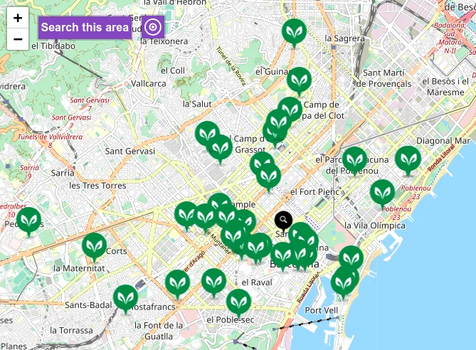
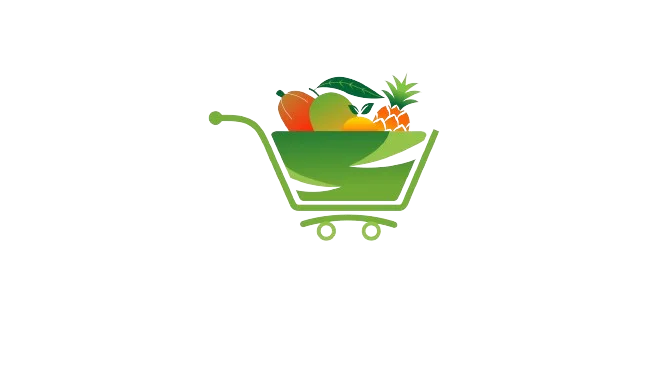

Explore Vegan Restaurants
Discover a variety of vegan, vegetarian, and vegan-friendly restaurants near you on HappyCow. Also available as a convenient app for Android and iOS. HappyCow goes beyond restaurants, helping you find vegan shops, bakeries, ice cream parlors, and hotels with vegan options. Your guide to vegan dining in Barcelona.

Supermarket Finds 
Explore SupperVeggie for comprehensive information on vegan products available in major supermarket chains across Catalonia.
Discover Vegan Shops
Visit the FAADA website to find a curated list of the primary vegan food shops in Catalonia.